- 일관된 굵기의 진한 외곽선과 단순한 색면
- 둥글고 과장된 체형, 큰 표정, 한눈에 읽히는 실루엣
- 밝은 아군 색·차분한 배경·구별되는 적의 포인트 색
- 유닛이 실제 전장 크기로 작아져도 병종·성장 단계·적 역할이 구별됨
- 큼직한 버튼, 아이콘 중심 카드, 일관된 프레임과 숫자 위계
- 기존 중앙 기지·주변8칸·상단 상태·하단 구매 영역 유지
FLOWER VS ZOMBIE : BASE DEFENSE · 사용자 제공 참고 자료
굵은 외곽선, 단순한 형태,
작아도 읽히는 카툰 게임
캐릭터·UI 9장과 적 디자인 5장을 묶어 다음 제작의 기준으로 보관합니다.
캐릭터와 화면 기준
적 디자인 기준
- 일반형: 작은 체형과 단순한 걸음 동작
- 원거리형: 투사체와 연결되는 큼직한 소품·공격 예고
- 탱커형: 넓은 몸통과 느린 무게감, 일반형보다 큰 실루엣
- 보스형: 고유 실루엣과 공격 예고. 크기와 색만으로 모든 상태를 전달하지 않음
- 익살스러운 좀비 표정, 적당한 비대칭과 낡은 소품
각 항목은 우리 게임용 시각 설계 방향이며, 레퍼런스 적의 실제 능력치를 설명하는 문장이 아닙니다.
제작·검수 기준
- 컨셉 확대도와 실제 인게임 크기를 함께 비교
- 새 캐릭터의 얼굴·실루엣·의상·소품을 우리 식물/좀비 세계관으로 설계
- 배경·캐릭터·UI의 광원·그림자·외곽선 굵기를 통일
- 투명 스프라이트 여백·발밑 기준점·배율을 통일해 배치 흔들림 방지
- 선택 후 캐릭터·배경·아이콘·버튼·애니메이션을 개별 리소스로 제작
- 참고 게임의 속성·장비·도감·전투 규칙은 별도 기획 검토 없이 도입하지 않음
참고 이미지 14장
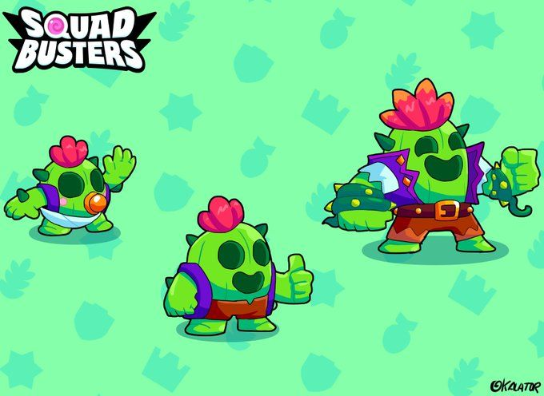
식물 캐릭터: 둥근 덩어리와 성장 단계별 실루엣
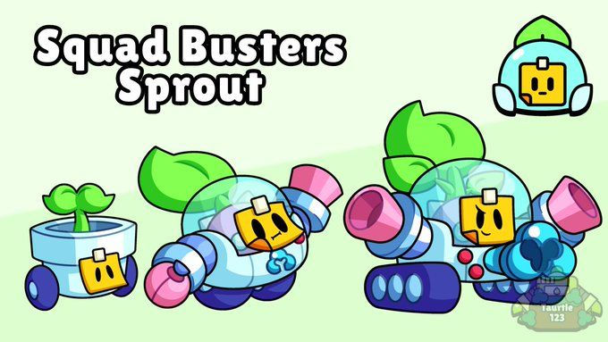
식물·기계 캐릭터: 잎·투명 돔·무기의 역할 표현
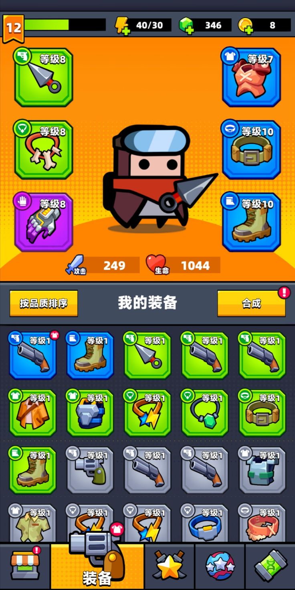
장비 UI: 굵은 테두리와 큼직한 아이콘
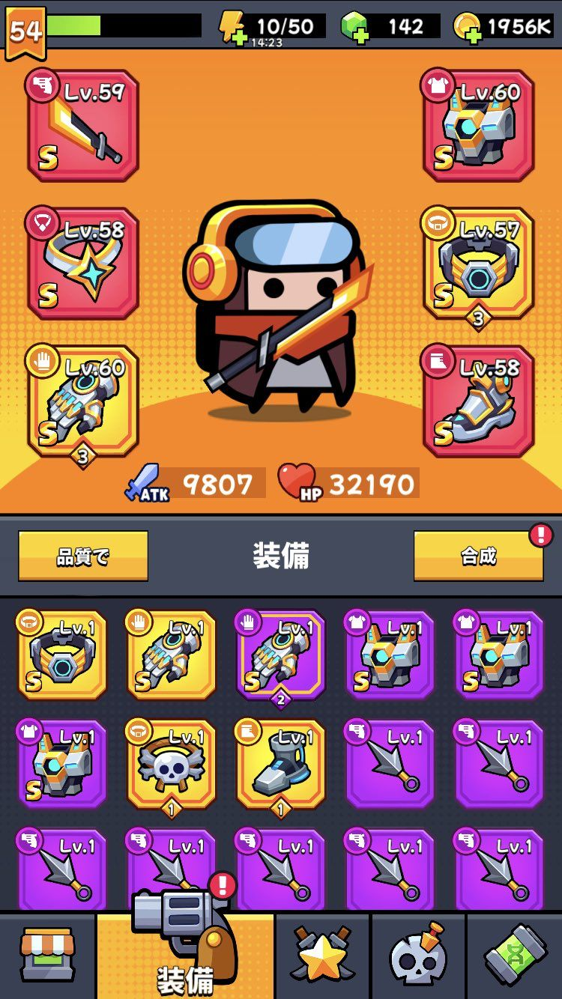
장비 UI: 색상·프레임·배지의 반복 규칙
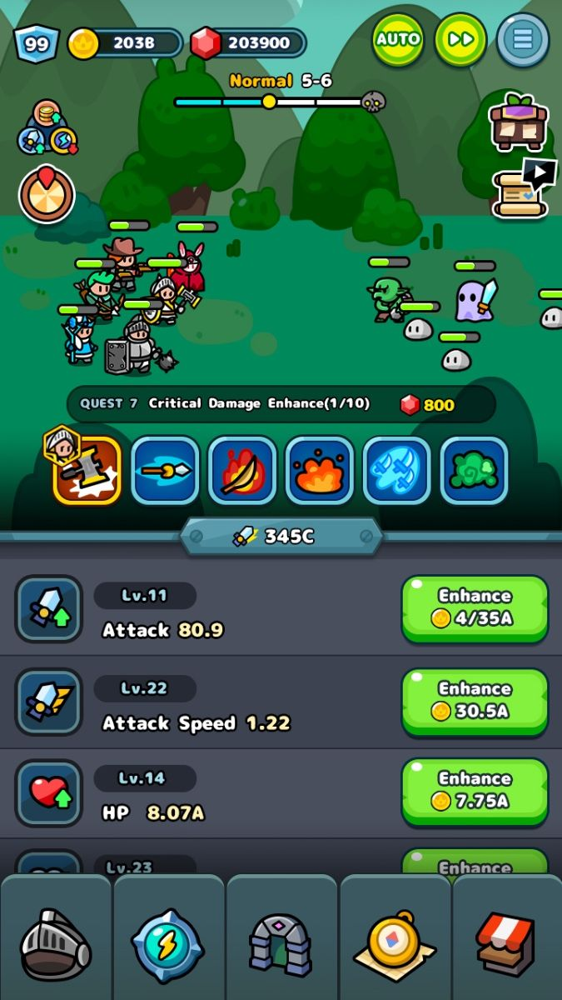
전투·강화 UI: 작은 캐릭터와 선명한 조작부
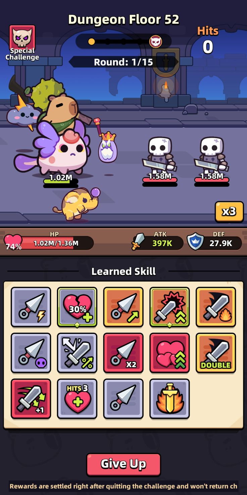
전투·스킬 UI: 단순한 캐릭터와 정리된 카드
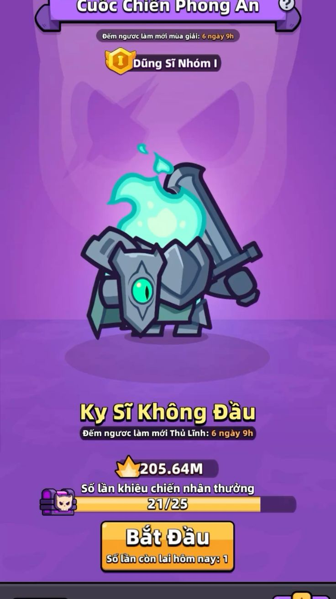
적 캐릭터: 큰 무기와 방패로 읽히는 역할
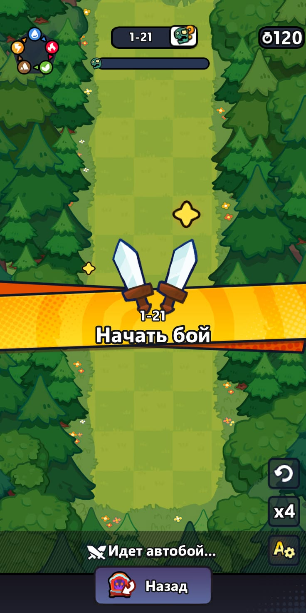
전투 배경: 낮은 대비의 지면과 외곽 수풀
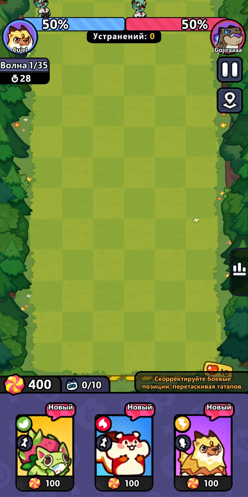
전투·카드 UI: 넓은 전장과 하단 구매 영역
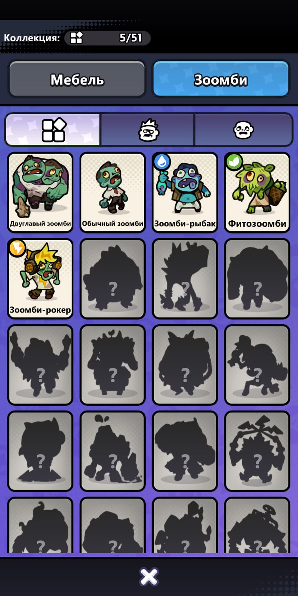
적 도감: 다양한 체형과 잠긴 실루엣
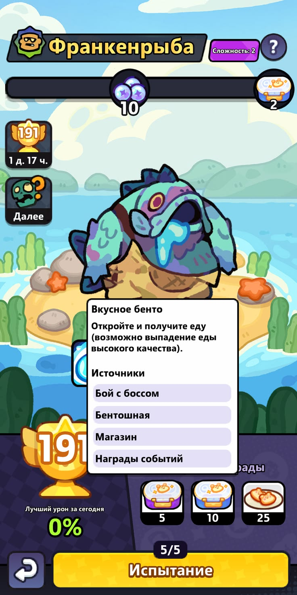
큰 적: 과장된 덩어리와 익살스러운 얼굴
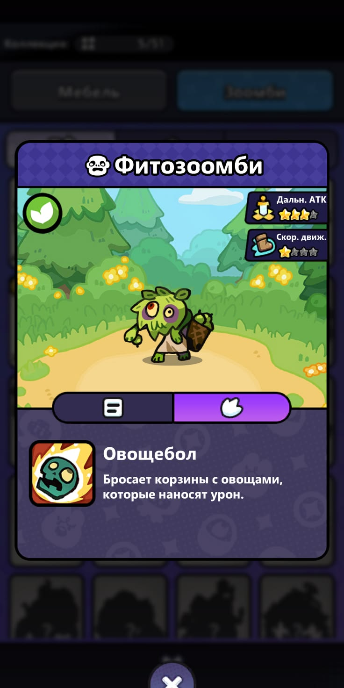
적 상세: 외형·아이콘·짧은 설명의 연결
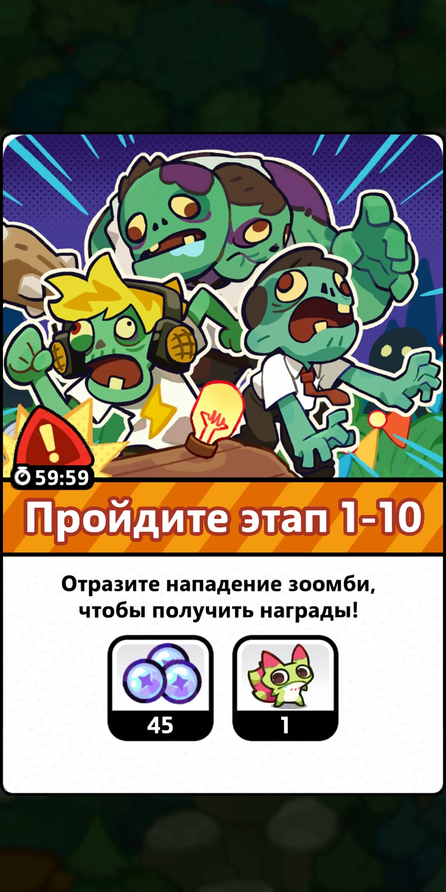
적 군상: 표정·소품·체격의 차이
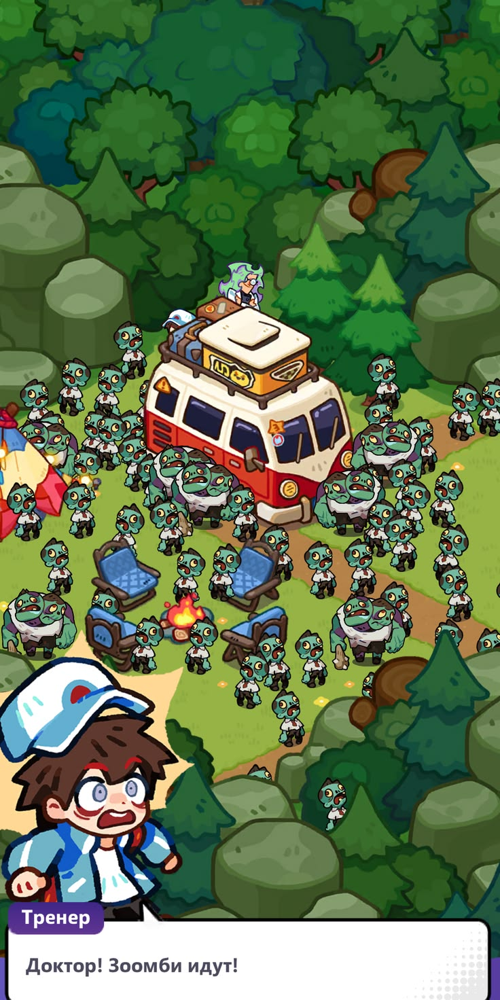
군집 장면: 일반형과 탱커형의 크기 대비